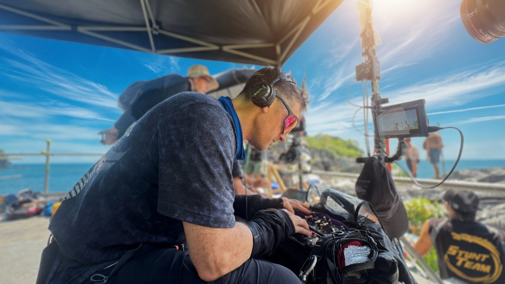

Production Sound Mixer · HOD · Asia-Pacific
Emmy-nominated production sound for international feature films and streaming.
Ande Schurr is a Singapore-based production sound mixer with two decades across feature films, high-end television and documentary, from the Langkawi rainforest to the volcanoes of New Zealand.
Trusted by directors and producers to deliver clean, well-balanced location tracks under pressure, and to be the reliable handoff when international productions come to the region.
Recent: Lord of the Flies (Netflix/BBC, 2026 Emmy nomination, Outstanding Sound Mixing) · Monkey Man (Universal Pictures)
2026 Emmy Nominee · Lord of the Flies (Netflix/BBC)
Monkey Man (Universal) · Hunt for the Wilderpeople
“Ande was brilliantly diligent on our adaptation of Lord of the Flies. He was meticulous with radio miking and provided a multitude of rainforest wild tracks recorded on location.”Marc Munden, Director
Showreel
Selected clips from recent international productions: clean dialogue, strong dynamic range, recorded where it happened.
Selected credits
Director: Marc Munden · Producers: Joel Wilson, Devrell-Cameron
Filmed in Langkawi, Malaysia
Director: Dev Patel · Producers: Basil Iwanyk, Samarth Sahni, Jomon Thomas
Filmed in Indonesia & Mumbai
Director: Tony Tilse · Producers: Susan Oliver, Sean Masterson
Filmed in Singapore & Indonesia
Director: John Bedolis · EP: Rich Rosenthal
Filmed in Singapore
Director: Mike Aho · Producer: Lyle Smith
Filmed in Costa Rica, Namibia, Vietnam, Thailand, Australia, Fiji
Director: Ben Harding · Presenter: Dr James Fox
Filmed in New Zealand: White Island, Lake Taupo, Wellington, Rotorua
Director: Taika Waititi · Producers: Carthew Neal, Matt Noonan, Leanne Saunders
Filmed in New Zealand: Auckland & Mt Ruapehu
Base & mobility
Singapore-based · NZ citizen with full Australia & NZ work rights · 1–3 hours from every major ASEAN production centre.
Full drama package: Sound Devices, 12× Wisycom radios, DPA mics, two booms, timecode, comms. Airline-checkable; on set anywhere in the region within a day.
Insured worldwide, equipment and liability. Paperwork ready the day the deal memo lands.
The package hires out to productions and visiting mixers: Wisycom RF with local support from someone who knows the region's licensing.

The Wild Track
Quarterly. Ninety seconds. What's shooting in the region, one problem solved on location, and where I'll be.